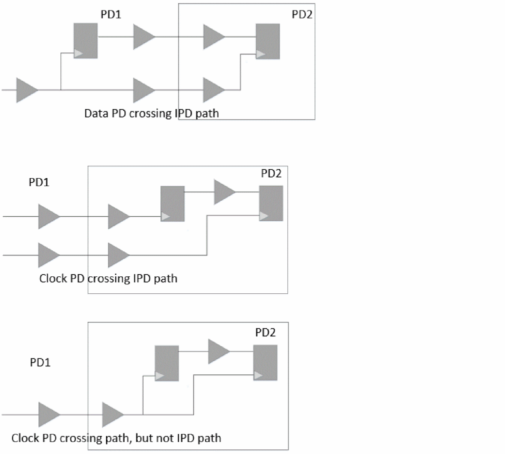
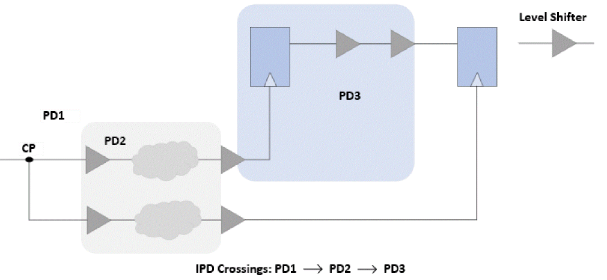
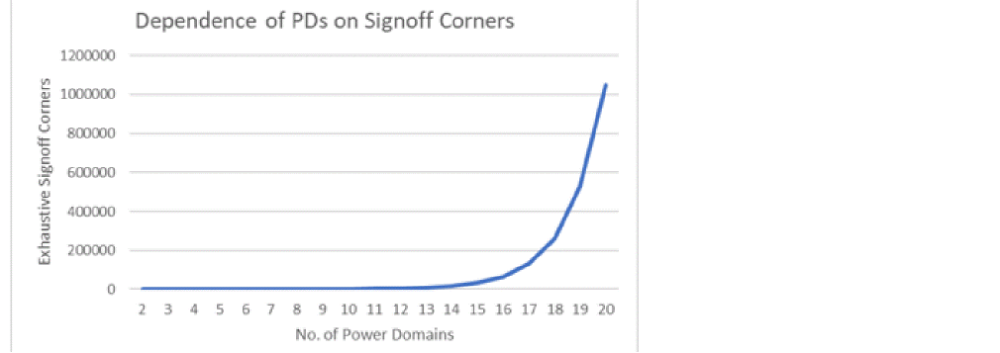

IPD Paths Classification
The design logic classification is based on the IPD analysis performed on the power domain crossing in the timing paths. The scenarios classified as IPD and non-IPD are described below:
- Data path crossing more than one power domain will always be considered as an IPD path (irrespective of the power domains that the clock paths traverse, or the voltages on the power domains that the data path traverses).
- Launch and/or capture clock path (launch/capture clock path here refers to the path from the clock source to start point/endpoint clock pin) crossing more than one power domain will also be classified as IPD path when:
Figure -85 IPD Paths Classification

In some cases, the IPD paths may have undesired, yet avoidable IPD crossings. These undesired crossings through multiple power domains may add to extra voltage combinations for IPD paths signoff and cause issues or delays in low power signoff.
Figure -86 Undesirable IPD Crossings

The number of exhaustive IPD signoff corners are dependent on the number of voltage corners, where power domains operate, and their number. So an increase in the number of power domains may lead to an exponential increase in IPD signoff corners for a constant number of operating voltages.
Figure -87 Increase in Signoff Corners with increase in Power Domains

The minimum power domains required for a path to be an IPD path is two, post common point, and the minimum signoff corners can be four for two operating voltage conditions. Thus, even if only one path in the whole design travels more than one power domain, it can cause an exponential increase in signoff corners, thus affecting the overall turnaround time and computations.
Return to top